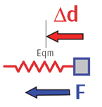

Energy of SHM
An object in SHM has the greatest amount of kinetic energy and the least amount of potential energy at the equilibrium position.
- We therefore use equilibrium as the origin or “reference level” when calculating potential energy for SHM.
- When an object has a position \(\vec{\mathbf{x}}\) relative to equilibrium, its potential energy equals the work that will be done on the object as it moves back to the equilibrium position.

- Initially, the restoring (net) force on the object is \({\vec{\mathbf{F}}}_i=-k{\vec{\mathbf{x}}}_i\).
- As the mass moves back to equilibrium, the net force will get smaller because the restoring force is directly proportional to the distance from equilibrium.
- When it reaches equilibrium, the net force will be zero.
- The average net force will therefore be one-half of the initial force: $${\vec{\mathbf{F}}}_{avg}=-\frac{1}{2}k{\vec{\mathbf{x}}}_i$$
- To calculate the work done on the mass (the kinetic energy gained, and the potential energy lost) we multiply the average force by the displacement: $$\Delta\vec{\mathbf{d}}={\vec{\mathbf{x}}}_f-{\vec{\mathbf{x}}}_i=-{\vec{\mathbf{x}}}_i$$ $$W={\vec{\mathbf{F}}}_{avg}\cdot\Delta\vec{\mathbf{d}}=\left(-\frac{1}{2}k{\vec{\mathbf{x}}}_i\right)\left(-{\vec{\mathbf{x}}}_i\right)\ =\frac{1}{2}kx_i^2$$
The potential energy, relative to equilibrium, of an object exhibiting SHM is given by the equation:$$E_p=\frac{1}{2}kx^2$$
- Since the restoring force is the net force, it includes both gravity and elastic forces; therefore, this potential energy formula includes both the gravitational and elastic potential energy!
- When using energy conservation with SHM, remember that the mechanical energy is entirely kinetic at equilibrium \((\vec{\mathbf{x}} = 0)\), entirely potential at \(\vec{\mathbf{x}} = ±A\), and a mix of kinetic and potential at any other position.
Example 1
A 60.0-gram mass exhibits SHM with an amplitude of 3.00 cm when attached to a spring with k = 20.0 N/m. Calculate the (i) mechanical energy of the system, and (iii) maximum speed of the mass.
Alternative 1 (Energy Conservation): The mechanical energy is the total of the kinetic and potential energy: $$E=\frac{1}{2}mv^2+\frac{1}{2}kx^2$$
When the mass is furthest from equilibrium, \(x = A\) and \(v = 0\): $$E = \mathrm{0\ J + {1\over 2}(20.0\ N/m)(0.0300\ m)^2 = 0.00900\ J}$$
When the mass is passing through equilibrium, \(x = 0\), so the energy is entirely kinetic: $$E=\frac{1}{2}mv^2$$ $$\frac{2E}{m}=v^2$$ $$v = \sqrt{\frac{2E}{m}}= \mathrm{\sqrt{2\cdot 0.00900\ J\over 0.0600\ kg} = 0.548\ m/s}$$
Alternative 2 (SHM Relations): As an alternative to using energy conservation, we could have calculated the period of the motion first: $$T = 2\pi\sqrt{m\over k} = \mathrm{2\pi \sqrt{0.0600\ kg \over 20.0\ N/m} = 0.344\ s}$$
Now use the equation for \(v_{max}\): $$v_{max} = {2\pi A \over T} = \mathrm{{2\pi\cdot 0.0300\ m \over 0.344\ s} = 0.548\ m/s}$$
Both methods give the same answer!
Example 2
Calculate the speed of the mass from Example 1 when the mass is halfway between equilibrium and its amplitude.
The mass now has both potential energy (because it’s not at equilibrium) and kinetic energy (because it’s not at its maximum extension). Calculate the potential energy first using \(x = A/2 = \mathrm{1.50\ cm}\): $$E_p = {1\over 2} kx^2 = \mathrm{{1\over 2} (20.0\ N/m) (0.0150\ m)^2 = 0.00225\ J}$$
Because the mechanical energy is conserved, we can calculate the kinetic energy: $$E_k = E – E_p = \mathrm{0.00900\ J – 0.00225\ J = 0.00675\ J}$$
Now evaluate the speed just as in Example 1: $$v = \mathrm{\sqrt{2\cdot 0.00675\ J \over 0.0600\ kg} = 0.474\ m/s}$$
There is no alternative solution this time, because the \(v_{max}\) equation can only tell us the speed at equilibrium, not at any other point.